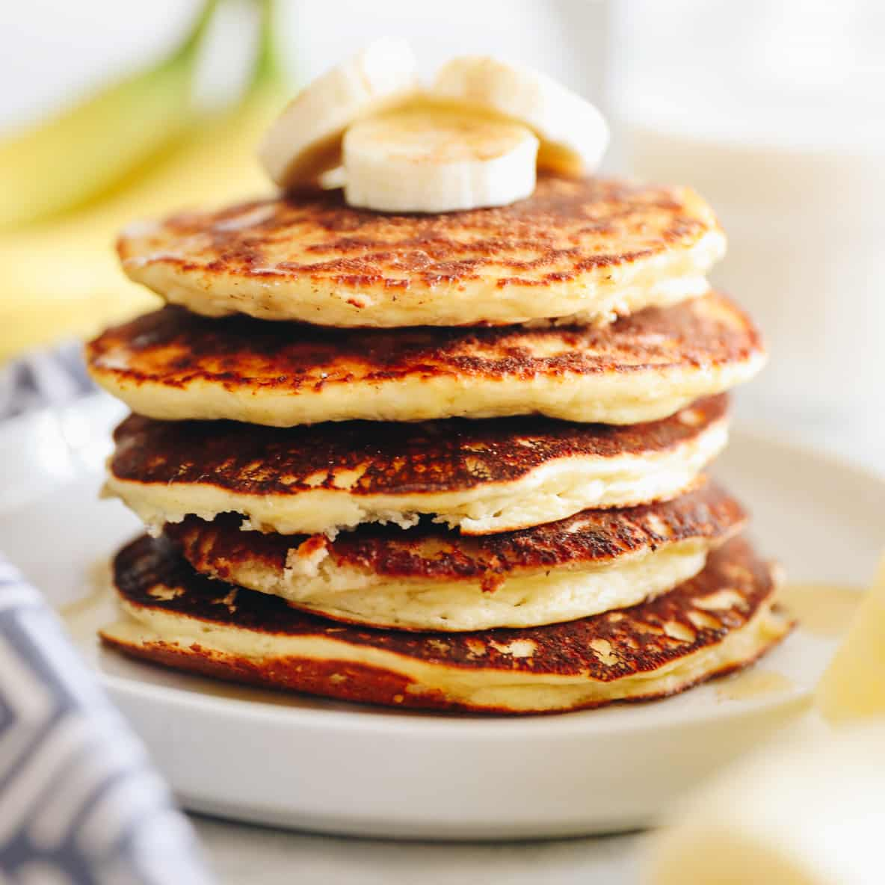

HOME
Protein Pancakes Recipe

Ingredients
- 2 Eggs
- 1 tablespoon vanilla extract
- 1 teaspoon stevia / Sweetener (optional, = 1/3 cup sugar)
- 1/2 plain Greek yogurt
- 2 scoops whey protein powder (unsweetened, 40grams total)
- 1 teapoon baking powder (gluten-free if needed)
- Cooking spray (for the griddle)
Steps
- Whisk the eggs, vanilla, stevia, and yogurt.
- Add the protein powder and whisk until completely smooth and blended.
- Whisk in the baking powder. Let batter rest while the griddle heats up.
- Head non-stick skillet over medium heat. If electric top, hit over medium-low heat. Spray skillet with oil.
- 1.5 - tablespoon cookie scoop to pour portions of batter onto the gridddle.
- Cook pancakes until they bubble on top for ~1 min. Flip and cook for another 10-20 seconds. Lower heat if needed.